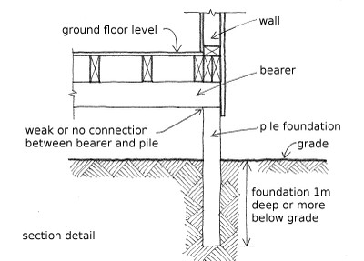

Deep foundation, no lateral capacity [FOSDN]
The foundations are 1m deep or more below grade, and they have no lateral capacity. Foundations with no lateral capacity include piles without lateral bracing support.

An example of a timber pile deep foundation with no lateral capacity.